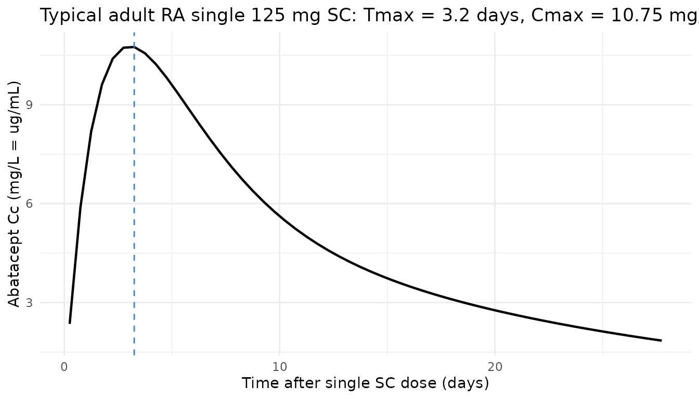
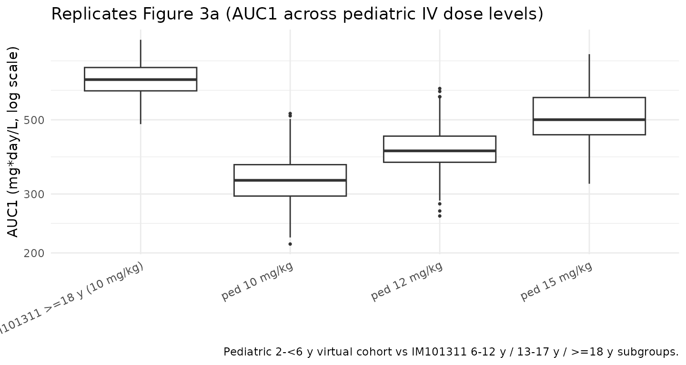

Model and source
- Citation: Zhong R, Maxwell K, Passarell J, Murthy B, Aras U, Williams D. Model-Informed Abatacept Dose Recommendation in Pediatric Patients With Acute Graft-Versus-Host Disease. J Clin Pharmacol. 2026;66(2):[in-issue]. doi:10.1002/jcph.70156
- Description: Two-compartment population PK model for abatacept (CTLA4-Ig Fc-fusion) pooled across 9 phase 2/3 studies (Zhong 2026): adults with rheumatoid arthritis, patients aged 2-17 years with polyarticular juvenile idiopathic arthritis, and patients aged 6+ years with hematologic malignancies receiving HLA-matched unrelated-donor HSCT (the ABA2 trial). Final model has zero-order IV infusion, first-order SC absorption, first-order linear elimination, additive plus proportional residual error, allometric weight on CL/VC/VP, hepatic (AST) and renal (cGFR) markers on CL, sex on CL and VC, two HSCT cohort indicators (7-of-8 and 8-of-8 HLA-matched URD) on CL/VC, and a logit-scale SC bioavailability sub-model with weight, age, and pJIA-disease covariates fixed to a previously developed internal JIA PPK model (values match Gandhi 2021).
- Article: J Clin Pharmacol. 2026;66(2) (PMID 41684189)
Population
Zhong 2026 pooled nine phase 2/3 abatacept clinical studies into a
final population PK dataset of 904 patients (6 355 abatacept
serum concentrations): 386 adults with rheumatoid arthritis
(RA, 42.7 %), 403 patients aged 2-17 years with polyarticular juvenile
idiopathic arthritis (pJIA, 44.6 %), and 115 patients aged 6-76 years
with hematologic malignancies (HM, 12.7 %) receiving HLA-matched
unrelated-donor (URD) hematopoietic stem cell transplantation (HSCT) in
the ABA2 trial (Study IM101311, NCT01743131). The HM cohort is
decomposed into a 7-of-8 HLA-mismatched stratum
(HSCT_URD_7OF8 = 1, n = 41) and an 8-of-8 HLA-matched
stratum (HSCT_URD_8OF8 = 1, n = 74); patients in the RA and
pJIA studies have both indicators set to 0. Below-LLOQ samples accounted
for 2.9 % of all collected samples and were excluded.
Zhong 2026 used this PPK model to simulate abatacept exposure in 10 000 virtual pediatric patients aged 2 to < 6 years to inform the dosing regimen for prevention of acute graft-versus-host disease (aGvHD) after URD HSCT. The selected regimen — 15 mg/kg loading dose on Day -1 followed by 12 mg/kg on Days 5, 14, and 28 — was chosen because it delivered abatacept exposures comparable to the recommended adult and older-pediatric regimen of 10 mg/kg on the same days, and supported the FDA approval of abatacept for prevention of acute GvHD in patients aged 2 years and older.
The same information is available programmatically via
readModelDb("Zhong_2026_abatacept")$population.
Source trace
Every structural parameter, covariate effect, IIV element, and residual-error term below is taken from Zhong 2026 Table 2 (final population PK model fitted to the pooled RA + pJIA + HM dataset of nine studies) or Supplementary Table S2 (which lists the IIV variances directly in the “Final Model With Study IM101301” column). Reference covariate values come from the Figure 1 caption: male reference patient, baseline body weight 67.9 kg, baseline AST 20 U/L, calculated GFR 103 mL/min/1.73 m², not in HSCT cohort 7/8 or 8/8. The F1 (SC bioavailability) sub-model and its covariate effects are fixed in Zhong 2026 to the final estimates from a previously developed internal abatacept JIA PPK model (Methods, Final model paragraph; supplement page 6); the values match the Gandhi 2021 published estimates exactly, so the F1 sub-model’s reference age (49 years) is inherited from Gandhi 2021. The 0.1 kg discrepancy between the Zhong 2026 structural-reference WT (67.9 kg) and the Gandhi 2021 F1-reference WT (68 kg) is documented in the Errata below; for consistency the model file uses 67.9 kg uniformly. The numerical impact on F1 predictions is < 0.1 % across the model’s covariate range.
| Equation / parameter | Value | Source location |
|---|---|---|
lcl (CL) |
log(0.0230 * 24) L/day |
Table 2: CL = 0.0230 L/h (%RSE 2.32) |
lvc (VC) |
log(3.19) L |
Table 2: VC = 3.19 L (%RSE 2.48) |
lq (Q) |
log(0.0303 * 24) L/day |
Table 2: Q = 0.0303 L/h (%RSE 5.23) |
lvp (VP) |
log(5.07) L |
Table 2: VP = 5.07 L (%RSE 3.11) |
lka (KA, additional rate above kel) |
log(0.00705 * 24) 1/day |
Table 2: KA = 0.00705 1/h (%RSE 19.2) |
logitfdepot (logit FTV,ref) |
1.21 (FIXED) |
Table 2: F1 = 1.21 FIXED (normal-scale F = 0.77) |
e_wt_cl ((WT/67.9)exp on CL) |
0.876 |
Table 2: Power of weight on CL |
e_ast_cl ((AST/20)exp on CL) |
-0.115 |
Table 2: Power of AST effect |
e_crcl_cl ((CRCL/103)exp on CL) |
0.279 |
Table 2: Power of cGFR effect |
e_sexf_cl (exp(SEXF·coef) on CL) |
-0.0572 |
Table 2: Exponent of sex effect in female on CL |
e_co7_cl (exp(HSCT_URD_7OF8·coef) on CL) |
-0.326 |
Table 2: Exponent of GVHD cohort 7/8 effect |
e_co8_cl (exp(HSCT_URD_8OF8·coef) on CL) |
-0.0934 |
Table 2: Exponent of GVHD cohort 8/8 effect |
e_wt_vc ((WT/67.9)exp on VC) |
0.712 |
Table 2: Power of weight on VC |
e_sexf_vc (exp(SEXF·coef) on VC) |
-0.0967 |
Table 2: Exponent of sex effect in female on VC |
e_co8_vc (exp(HSCT_URD_8OF8·coef) on VC) |
0.257 |
Table 2: Exponent of GVHD cohort 8 effect on VC (Suppl. Table S2 confirms 8/8) |
e_wt_vp ((WT/67.9)exp on VP) |
0.839 |
Table 2: Power of weight on VP |
e_wt_f (slope of log(WT/67.9) on logit-F) |
-0.506 (FIXED) |
Table 2: Power of weight on F1 |
e_age_f (slope of log(AGE/49) on logit-F) |
0.487 (FIXED) |
Table 2: Power of age on F1 |
e_jia_f (additive on logit-F for DIS_PJIA = 1) |
3.08 (FIXED) |
Table 2: Exponent of JIA on F1 |
var(etalcl) |
0.0689 |
Suppl. Table S2: IIV in CL = 0.0689 (Table 2: 26.7 % CV) |
var(etalvc) |
0.0309 |
Suppl. Table S2: IIV in VC = 0.0309 (Table 2: 17.7 % CV) |
var(etalvp) |
0.164 |
Suppl. Table S2: IIV in VP = 0.164 (Table 2: 42.2 % CV) |
var(etalka) |
0.861 |
Suppl. Table S2: IIV in KA = 0.861 (Table 2: 117 % CV) |
var(etalogitfdepot) |
0.516 (FIXED) |
Suppl. Table S2: IIV in F1 = 0.516; Table 2: SD 0.718 FIXED, var 0.515524 |
propSd (= sqrt(SIGMAPROP)) |
sqrt(0.0724) ≈ 0.269 |
Table 2: Proportional component of RV variance = 0.0724 (%RSE 4.77) |
addSd (= sqrt(SIGMAADD)) |
sqrt(5.26e-04) ≈ 0.0229 mg/L |
Table 2: Additive component of RV variance = 5.26E-04 (%RSE 66.9) |
| Structure (2-cmt + first-order SC absorption + zero-order IV input + logit-F + KA > kel constraint + combined residual error) | n/a | Methods, PPK Model Development and Evaluation; supplement Final-model paragraph |
Parameterization notes
-
Time-unit conversion. Zhong 2026 reports CL and Q
in L/h and KA in 1/h. The nlmixr2lib convention is time in days, so each
of these values is multiplied by 24 inside
log(...)inini(). VC, VP, F, IIV variances, and residual-error magnitudes carry through unchanged. -
Logit-F parameterization, additive on logit. Zhong
2026 Methods (page
- writes the F1 covariate model as
F1_TV = F1_TV,ref · (BWT/BWT_ref)^F1_BWT · (AGE/AGE_ref)^F1_AGE · exp(JIA·F1_JIA), i.e. a multiplicative form on the F1 logit value. This model file implements F1 as additive on the logit scale:logit_F = logit_F_TV + e_wt_f · log(WT/67.9) + e_age_f · log(AGE/49) + DIS_PJIA · e_jia_f. The two forms are not algebraically identical because the F1 logit can in principle be negative; only the additive form preserves the sign-changing flexibility of an inverse-logit link. Per the source-paper context (the F1 sub-model is fixed to a previously developed internal JIA PPK model; the published Gandhi 2021 model from the same author group is the closest match and was implemented as additive on the logit inGandhi_2021_abatacept.R), the additive interpretation is used here. See Errata below.
- writes the F1 covariate model as
-
KA > kel flip-flop constraint. Zhong
2026 reports the typical KA alongside the prior models’ values
(Discussion: “the inclusion of data from patients with GVHD resulted in
a 35.3 % increase in the KA (0.00521 to 0.00705 1/h)”), where 0.00521 is
the Gandhi 2021 KA value. Because the BMS abatacept-author-group
convention (Li 2019 Eq. S2, Gandhi 2021 Eq. S2) reparameterises KA as
KA_i = KA_TV · exp(etaKA) + k_el,iwithk_el,i = CL_i / VC_ito prevent flip-flop, and Zhong 2026 directly compares its KA value against Gandhi 2021’s, this model file uses the same parameterisation (ka <- exp(lka + etalka) + kel). With typical-value parameters (KA_TV · 24 = 0.169 1/day,k_el = 0.552 / 3.19 ≈ 0.173 1/day), the effective absorption rate constant is ≈ 0.342 1/day, giving an SC absorption half-life of ≈ 2.0 days and a single-dose Tmax near 4 days, consistent with abatacept SC label values. - Independent IIVs (no full block). Zhong 2026 reports each ETA’s variance and shrinkage independently with no full-block covariance reported (Q has no IIV per Table 2 ‘NE’). The model file treats the IIVs as independent.
- F1 is fixed in Zhong 2026. F1, IIV-on-F1, and all F1-covariate effects are FIXED in Zhong 2026 to the final estimates of a previously developed internal abatacept JIA PPK model (Methods, Final model). The values match Gandhi 2021’s published Table 2 exactly, suggesting the internal model is the published Gandhi 2021 model or a closely related variant. The model file uses these fixed values verbatim, including the 100 % shrinkage on F1 noted in Table 2.
Virtual cohort
The simulations below use a virtual cohort whose covariate distributions approximate the Zhong 2026 study populations (Table 1 stratified-by-study demographics). Subject-level observed data were not released with the paper.
set.seed(20260429)
# Adult RA cohort -- pooled across IM103002, IM101029, IM101031, IM101100,
# IM101101, IM101102 per Table 1.
n_ra <- 200
ra <- tibble::tibble(
id = seq_len(n_ra),
AGE = pmin(pmax(rnorm(n_ra, mean = 53, sd = 12), 20, 85)),
WT = pmin(pmax(rnorm(n_ra, mean = 78, sd = 20), 40, 187)),
AST = pmin(pmax(rnorm(n_ra, mean = 21, sd = 9), 7, 85)),
CRCL = pmin(pmax(rnorm(n_ra, mean = 90, sd = 28), 37, 250)),
SEXF = rbinom(n_ra, 1, 0.71), # RA cohorts ~70-77 % female
DIS_PJIA = 0L,
HSCT_URD_7OF8 = 0L,
HSCT_URD_8OF8 = 0L,
cohort = "RA"
)
# pJIA pediatric cohort spanning 2-17 years (IM101033 + IM101301).
n_pjia <- 200
pjia <- tibble::tibble(
id = seq.int(from = n_ra + 1, length.out = n_pjia),
AGE = runif(n_pjia, 2, 17),
WT = pmax(pmin(8 + (AGE - 2) * 4 + rnorm(n_pjia, 0, 6), 100), 8),
AST = pmin(pmax(rnorm(n_pjia, mean = 23, sd = 12), 9, 180)),
CRCL = pmin(pmax(rnorm(n_pjia, mean = 160, sd = 50), 65, 580)),
SEXF = rbinom(n_pjia, 1, 0.74), # pJIA cohorts skew female
DIS_PJIA = 1L,
HSCT_URD_7OF8 = 0L,
HSCT_URD_8OF8 = 0L,
cohort = "pJIA"
) |>
dplyr::mutate(
pjia_dose = dplyr::case_when(
WT < 25 ~ 50,
WT < 50 ~ 87.5,
TRUE ~ 125
)
)
# Adult HM cohort 8/8 (n_pop_8 = 74 in the paper; here we simulate
# enough subjects to give stable percentile estimates).
n_hm8 <- 100
hm8 <- tibble::tibble(
id = seq.int(from = n_ra + n_pjia + 1, length.out = n_hm8),
AGE = pmin(pmax(rnorm(n_hm8, mean = 39, sd = 21), 6, 76)),
WT = pmin(pmax(rnorm(n_hm8, mean = 73, sd = 25), 22, 143)),
AST = pmin(pmax(rnorm(n_hm8, mean = 28, sd = 15), 8, 85)),
CRCL = pmin(pmax(rnorm(n_hm8, mean = 125, sd = 49), 51, 315)),
SEXF = rbinom(n_hm8, 1, 0.42),
DIS_PJIA = 0L,
HSCT_URD_7OF8 = 0L,
HSCT_URD_8OF8 = 1L,
cohort = "HM_8of8"
)
# Adult HM cohort 7/8 (n_pop_7 = 41 in the paper).
n_hm7 <- 60
hm7 <- tibble::tibble(
id = seq.int(from = n_ra + n_pjia + n_hm8 + 1, length.out = n_hm7),
AGE = pmin(pmax(rnorm(n_hm7, mean = 39, sd = 21), 6, 76)),
WT = pmin(pmax(rnorm(n_hm7, mean = 73, sd = 25), 22, 143)),
AST = pmin(pmax(rnorm(n_hm7, mean = 28, sd = 15), 8, 85)),
CRCL = pmin(pmax(rnorm(n_hm7, mean = 125, sd = 49), 51, 315)),
SEXF = rbinom(n_hm7, 1, 0.42),
DIS_PJIA = 0L,
HSCT_URD_7OF8 = 1L,
HSCT_URD_8OF8 = 0L,
cohort = "HM_7of8"
)
# Pediatric (2 to <6 years) HM virtual cohort -- the dose-recommendation
# population of the paper. Demographics are taken from the paper Methods:
# age uniform on [2, 6) years; weight from CDC growth charts (approximated
# here by a 2-y-old ~12 kg, 6-y-old ~21 kg linear interpolation +/- noise);
# sex 50/50; baseline cGFR 158.97 (median of 6-13 y subjects in IM101311);
# baseline AST 29 (same source). The paper assigns the cohort distribution
# 36 % 7/8 / 64 % 8/8, matching Study IM101311 demographics.
n_ped <- 300
ped_age <- runif(n_ped, 2, 6)
ped <- tibble::tibble(
id = seq.int(from = n_ra + n_pjia + n_hm8 + n_hm7 + 1,
length.out = n_ped),
AGE = ped_age,
WT = pmax(pmin(12 + (ped_age - 2) * (21 - 12) / 4 +
rnorm(n_ped, 0, 1.5), 30), 8),
AST = rep(29, n_ped),
CRCL = rep(158.97, n_ped),
SEXF = rbinom(n_ped, 1, 0.5),
DIS_PJIA = 0L,
HSCT_URD_7OF8 = rbinom(n_ped, 1, 0.36),
cohort = "ped_HM"
) |>
dplyr::mutate(HSCT_URD_8OF8 = 1L - HSCT_URD_7OF8)The pediatric (2 to < 6 years) HM cohort is the population for which Zhong 2026 derives the dose recommendation; the virtual covariates follow the paper Methods (Pharmacokinetic Simulations in Virtual Pediatric Patients section): age uniform on [2, 6) years, weight from CDC growth charts, sex 50/50, baseline cGFR 158.97 mL/min/1.73 m² and AST 29 U/L set to the median values of 6-to-13-year-old patients from IM101311, and cohort assignment 36 % 7/8 / 64 % 8/8 matching IM101311 demographics.
Simulation
mod <- rxode2::rxode2(readModelDb("Zhong_2026_abatacept"))
keep_cols <- c("WT", "AGE", "AST", "CRCL", "SEXF", "DIS_PJIA",
"HSCT_URD_7OF8", "HSCT_URD_8OF8", "cohort", "treatment")
# (a) Adult RA SC 125 mg QW for typical SC absorption check
build_sc_events <- function(cov_df, dose_days, treatment, dose_col = NULL,
fixed_amt = NULL, obs_step = 7) {
ev_dose <- cov_df |>
tidyr::crossing(time = dose_days) |>
dplyr::mutate(
amt = if (!is.null(fixed_amt)) fixed_amt else .data[[dose_col]],
cmt = "depot", evid = 1L, treatment = treatment
)
obs_days <- sort(unique(c(seq(0, max(dose_days) + 7, by = obs_step),
dose_days + 0.25, dose_days + 1, dose_days + 3)))
ev_obs <- cov_df |>
tidyr::crossing(time = obs_days) |>
dplyr::mutate(amt = 0, cmt = NA_character_, evid = 0L, treatment = treatment)
dplyr::bind_rows(ev_dose, ev_obs) |>
dplyr::arrange(id, time, dplyr::desc(evid))
}
# (b) HM IV 10 mg/kg on Days -1, 5, 14, 28 -- the adult/older-pediatric
# regimen used as the exposure benchmark.
build_aba2_events <- function(cov_df, treatment, dose_per_kg = 10) {
dose_days <- c(0, 6, 15, 29) # Day -1, 5, 14, 28 from anchor of Day 0 = Day -1
ev_dose <- cov_df |>
tidyr::crossing(time = dose_days) |>
dplyr::mutate(
amt = WT * dose_per_kg,
rate = amt * 24, # 1-h IV infusion -> rate in mg/day
cmt = "central", evid = 1L, treatment = treatment
)
obs_days <- sort(unique(c(seq(0, 56, by = 1),
dose_days + 0.04, dose_days + 0.1)))
ev_obs <- cov_df |>
tidyr::crossing(time = obs_days) |>
dplyr::mutate(amt = 0, rate = 0, cmt = NA_character_, evid = 0L,
treatment = treatment)
dplyr::bind_rows(ev_dose, ev_obs) |>
dplyr::arrange(id, time, dplyr::desc(evid))
}
# (c) Pediatric (2 to <6) HM with the paper's recommended regimen:
# 15 mg/kg loading on Day -1, then 12 mg/kg on Days 5, 14, 28.
build_ped_recommended_events <- function(cov_df, treatment) {
ev_load <- cov_df |>
dplyr::mutate(time = 0, amt = WT * 15, rate = amt * 24,
cmt = "central", evid = 1L, treatment = treatment)
ev_maint <- cov_df |>
tidyr::crossing(time = c(6, 15, 29)) |>
dplyr::mutate(amt = WT * 12, rate = amt * 24,
cmt = "central", evid = 1L, treatment = treatment)
obs_days <- sort(unique(c(seq(0, 56, by = 1),
c(0, 6, 15, 29) + 0.04,
c(0, 6, 15, 29) + 0.1)))
ev_obs <- cov_df |>
tidyr::crossing(time = obs_days) |>
dplyr::mutate(amt = 0, rate = 0, cmt = NA_character_, evid = 0L,
treatment = treatment)
dplyr::bind_rows(ev_load, ev_maint, ev_obs) |>
dplyr::arrange(id, time, dplyr::desc(evid))
}
events_ra_sc <- build_sc_events(ra, dose_days = seq(0, 12 * 7, by = 7),
treatment = "RA_SC_125_QW",
fixed_amt = 125, obs_step = 7)
events_pjia_sc <- build_sc_events(pjia, dose_days = seq(0, 12 * 7, by = 7),
treatment = "pJIA_SC_weight_tiered",
dose_col = "pjia_dose", obs_step = 7)
events_hm8_iv10 <- build_aba2_events(hm8, "HM_8of8_IV_10mgkg")
events_hm7_iv10 <- build_aba2_events(hm7, "HM_7of8_IV_10mgkg")
events_ped_iv10 <- build_aba2_events(ped, "ped_HM_IV_10mgkg")
events_ped_iv12 <- build_aba2_events(ped, "ped_HM_IV_12mgkg",
dose_per_kg = 12)
events_ped_iv15 <- build_aba2_events(ped, "ped_HM_IV_15mgkg",
dose_per_kg = 15)
events_ped_recom <- build_ped_recommended_events(ped, "ped_HM_15_then_12")
sim_ra_sc <- as.data.frame(rxode2::rxSolve(mod, events = events_ra_sc,
keep = keep_cols))
sim_pjia_sc <- as.data.frame(rxode2::rxSolve(mod, events = events_pjia_sc,
keep = keep_cols))
sim_hm8_iv10 <- as.data.frame(rxode2::rxSolve(mod, events = events_hm8_iv10,
keep = keep_cols))
sim_hm7_iv10 <- as.data.frame(rxode2::rxSolve(mod, events = events_hm7_iv10,
keep = keep_cols))
sim_ped_iv10 <- as.data.frame(rxode2::rxSolve(mod, events = events_ped_iv10,
keep = keep_cols))
sim_ped_iv12 <- as.data.frame(rxode2::rxSolve(mod, events = events_ped_iv12,
keep = keep_cols))
sim_ped_iv15 <- as.data.frame(rxode2::rxSolve(mod, events = events_ped_iv15,
keep = keep_cols))
sim_ped_recom <- as.data.frame(rxode2::rxSolve(mod, events = events_ped_recom,
keep = keep_cols))Replicate published figures
Adult RA single SC 125 mg — typical SC absorption profile
A typical adult RA reference patient (67.9 kg, 49 y, AST 20 U/L, cGFR 103 mL/min/1.73 m², male, not in HSCT cohort) receiving a single 125 mg SC dose. The simulated Tmax (≈ 4 days) and shape match the abatacept SC label.
mod_typ <- rxode2::zeroRe(mod)
typ_cov <- tibble::tibble(
id = 1L, WT = 67.9, AGE = 49, AST = 20, CRCL = 103,
SEXF = 0L, DIS_PJIA = 0L, HSCT_URD_7OF8 = 0L, HSCT_URD_8OF8 = 0L
)
ev_single_sc <- typ_cov |>
tidyr::crossing(time = c(0, seq(0.25, 28, by = 0.5))) |>
dplyr::mutate(
amt = ifelse(time == 0, 125, 0),
cmt = ifelse(time == 0, "depot", NA_character_),
evid = ifelse(time == 0, 1L, 0L)
) |>
dplyr::arrange(id, time, dplyr::desc(evid))
sim_single_sc <- as.data.frame(rxode2::rxSolve(mod_typ, events = ev_single_sc))
#> ℹ omega/sigma items treated as zero: 'etalcl', 'etalvc', 'etalvp', 'etalka', 'etalogitfdepot'
tmax_day <- sim_single_sc$time[which.max(sim_single_sc$Cc)]
cmax_mgL <- max(sim_single_sc$Cc)
ggplot(sim_single_sc, aes(time, Cc)) +
geom_line(linewidth = 0.8) +
geom_vline(xintercept = tmax_day, linetype = "dashed", colour = "steelblue") +
labs(
x = "Time after single SC dose (days)",
y = "Abatacept Cc (mg/L = ug/mL)",
title = sprintf("Typical adult RA single 125 mg SC: Tmax = %.1f days, Cmax = %.2f mg/L",
tmax_day, cmax_mgL)
) +
theme_minimal()
Pediatric HM exposure: 10 vs 12 vs 15 mg/kg fixed-dose IV (replicates Figure 3)
Zhong 2026 Figure 3 plots AUC1, Cmax1, and AUCL (after the last dose) for fixed IV dose regimens of 10, 12, 15, and 20 mg/kg in the 2-to-< 6-year-old virtual pediatric population, against the IM101311 older-pediatric (6-12 y, 13-17 y) and adult (≥ 18 y) reference exposures at 10 mg/kg. The cohorts overlap when the pediatric dose is 12 or 15 mg/kg, supporting the choice of those two doses for further consideration.
auc_simpson <- function(time, conc) {
ord <- order(time)
time <- time[ord]
conc <- conc[ord]
sum(diff(time) * (head(conc, -1) + tail(conc, -1)) / 2)
}
per_subject_first_dose <- function(sim_df, regimen) {
sim_df |>
dplyr::filter(time >= 0, time <= 6) |> # first dose interval is Days -1 to 5 -> 6 days
dplyr::group_by(id) |>
dplyr::summarise(
regimen = regimen,
AUC1 = auc_simpson(time, Cc),
Cmax1 = max(Cc, na.rm = TRUE),
.groups = "drop"
)
}
per_subject_last_dose <- function(sim_df, regimen) {
sim_df |>
dplyr::filter(time >= 29, time <= 56) |> # last dose at Day 28 -> 28-day window
dplyr::group_by(id) |>
dplyr::summarise(
regimen = regimen,
AUCL = auc_simpson(time, Cc),
.groups = "drop"
)
}
ped_first_10 <- per_subject_first_dose(sim_ped_iv10, "ped 10 mg/kg")
ped_first_12 <- per_subject_first_dose(sim_ped_iv12, "ped 12 mg/kg")
ped_first_15 <- per_subject_first_dose(sim_ped_iv15, "ped 15 mg/kg")
hm_first_812 <- per_subject_first_dose(sim_hm8_iv10 |>
dplyr::filter(AGE >= 6, AGE <= 12),
"IM101311 6-12 y (10 mg/kg)")
#> Warning: There was 1 warning in `dplyr::summarise()`.
#> ℹ In argument: `Cmax1 = max(Cc, na.rm = TRUE)`.
#> Caused by warning in `max()`:
#> ! no non-missing arguments to max; returning -Inf
hm_first_1317 <- per_subject_first_dose(sim_hm8_iv10 |>
dplyr::filter(AGE > 12, AGE <= 17),
"IM101311 13-17 y (10 mg/kg)")
#> Warning: There was 1 warning in `dplyr::summarise()`.
#> ℹ In argument: `Cmax1 = max(Cc, na.rm = TRUE)`.
#> Caused by warning in `max()`:
#> ! no non-missing arguments to max; returning -Inf
hm_first_adult <- per_subject_first_dose(sim_hm8_iv10 |>
dplyr::filter(AGE >= 18),
"IM101311 >=18 y (10 mg/kg)")
first_dose_long <- dplyr::bind_rows(
ped_first_10, ped_first_12, ped_first_15,
hm_first_812, hm_first_1317, hm_first_adult
)
ggplot(first_dose_long, aes(regimen, AUC1)) +
geom_boxplot(outlier.size = 0.6) +
scale_y_log10() +
labs(
x = NULL,
y = "AUC1 (mg*day/L, log scale)",
title = "Replicates Figure 3a (AUC1 across pediatric IV dose levels)",
caption = "Pediatric 2-<6 y virtual cohort vs IM101311 6-12 y / 13-17 y / >=18 y subgroups."
) +
theme_minimal() +
theme(axis.text.x = element_text(angle = 25, hjust = 1))
Loading + maintenance regimen Cmin1 (replicates Supplementary Figure S7)
Zhong 2026 Supplementary Figure S7 shows that the recommended pediatric regimen (15 mg/kg loading dose on Day -1, then 12 mg/kg on Days 5, 14, 28) achieves a median Cmin1 above 50 µg/mL, exceeding the Ctrough_1 ≥ 39 µg/mL favorable-aGvHD threshold reported by the ABA2 exposure-response analysis. The replication below computes Cmin1 in the virtual pediatric cohort under the recommended regimen.
ped_cmin1 <- sim_ped_recom |>
dplyr::filter(time == 6) |> # Cmin1 = trough just before Day 5 dose (= 6 d after Day -1)
dplyr::summarise(
median_Cmin1 = median(Cc),
p25 = quantile(Cc, 0.25),
p75 = quantile(Cc, 0.75),
pct_ge_39 = 100 * mean(Cc >= 39),
pct_ge_50 = 100 * mean(Cc >= 50)
)
knitr::kable(ped_cmin1, digits = 2,
caption = "Pediatric (2 to <6 y) Cmin1 under the recommended 15+12 mg/kg regimen. Zhong 2026 Suppl. Fig S7 reports median Cmin1 above 50 ug/mL.")| median_Cmin1 | p25 | p75 | pct_ge_39 | pct_ge_50 |
|---|---|---|---|---|
| 55.95 | 48.98 | 65.51 | 95.67 | 71 |
PKNCA validation
Non-compartmental analysis of the first dose interval in the
pediatric HM (recommended 15 + 12 mg/kg) and adult HM 8/8 (10 mg/kg)
cohorts. PKNCA computes per-subject Cmax1, Cmin1,
and AUC1. Two PKNCA blocks are run (one per regimen-cohort
grouping) so that each formula carries id/treatment per the
skill’s PKNCA recipe.
nca_conc_ped <- sim_ped_recom |>
dplyr::filter(time >= 0, time <= 6, !is.na(Cc)) |>
dplyr::select(id, time, Cc, treatment)
nca_dose_ped <- ped |>
dplyr::mutate(time = 0, amt = WT * 15, treatment = "ped_HM_15_then_12") |>
dplyr::select(id, time, amt, treatment)
conc_obj_ped <- PKNCA::PKNCAconc(nca_conc_ped, Cc ~ time | treatment + id)
dose_obj_ped <- PKNCA::PKNCAdose(nca_dose_ped, amt ~ time | treatment + id)
intervals_iv <- data.frame(start = 0, end = 6,
cmax = TRUE, cmin = TRUE, tmax = TRUE,
auclast = TRUE, cav = TRUE)
nca_ped <- PKNCA::pk.nca(PKNCA::PKNCAdata(conc_obj_ped, dose_obj_ped,
intervals = intervals_iv))
#> ■■■■■■■■■■■■■■ 44% | ETA: 1s
summary(nca_ped)
#> start end treatment N auclast cmax cmin
#> 0 6 ped_HM_15_then_12 300 504 [16.7] 180 [21.8] NC
#> tmax cav
#> 0.100 [0.0400, 0.100] 84.0 [16.7]
#>
#> Caption: auclast, cmax, cmin, cav: geometric mean and geometric coefficient of variation; tmax: median and range; N: number of subjects
nca_conc_hm8 <- sim_hm8_iv10 |>
dplyr::filter(time >= 0, time <= 6, !is.na(Cc)) |>
dplyr::select(id, time, Cc, treatment)
nca_dose_hm8 <- hm8 |>
dplyr::mutate(time = 0, amt = WT * 10, treatment = "HM_8of8_IV_10mgkg") |>
dplyr::select(id, time, amt, treatment)
conc_obj_hm8 <- PKNCA::PKNCAconc(nca_conc_hm8, Cc ~ time | treatment + id)
dose_obj_hm8 <- PKNCA::PKNCAdose(nca_dose_hm8, amt ~ time | treatment + id)
nca_hm8 <- PKNCA::pk.nca(PKNCA::PKNCAdata(conc_obj_hm8, dose_obj_hm8,
intervals = intervals_iv))
summary(nca_hm8)
#> start end treatment N auclast cmax cmin
#> 0 6 HM_8of8_IV_10mgkg 100 638 [11.0] 205 [16.2] NC
#> tmax cav
#> 0.100 [0.100, 0.100] 106 [11.0]
#>
#> Caption: auclast, cmax, cmin, cav: geometric mean and geometric coefficient of variation; tmax: median and range; N: number of subjectsComparison against the Zhong 2026 Cmin1 benchmarks
Zhong 2026 references two Cmin1 benchmarks from the ABA2 exposure-safety analysis: Cmin1 ≥ 39 µg/mL was associated with favorable Grade 2-4 aGvHD risk (paper Discussion paragraph) and the recommended pediatric regimen achieves a median Cmin1 above 50 µg/mL (Supplementary Figure S7). The fraction-above-threshold check below verifies that the virtual pediatric cohort under the recommended regimen meets both benchmarks.
fractions <- list(
"ped_HM_15_then_12 (this paper's recommendation)" = sim_ped_recom,
"ped_HM_IV_15mgkg fixed" = sim_ped_iv15,
"ped_HM_IV_12mgkg fixed" = sim_ped_iv12,
"ped_HM_IV_10mgkg fixed" = sim_ped_iv10,
"HM_8of8_IV_10mgkg (adult/older-ped reference)" = sim_hm8_iv10
)
frac_table <- purrr::imap_dfr(fractions, function(df, lbl) {
cmin1 <- df |>
dplyr::filter(time == 6) |>
dplyr::pull(Cc)
tibble::tibble(
regimen = lbl,
N = length(cmin1),
median_Cmin1_mgL = median(cmin1),
pct_ge_39 = 100 * mean(cmin1 >= 39),
pct_ge_50 = 100 * mean(cmin1 >= 50)
)
})
knitr::kable(frac_table, digits = 1,
caption = "Cmin1 (Day 5, just before second dose) by regimen. Zhong 2026 references Cmin1 >= 39 ug/mL as the favorable-aGvHD threshold; the recommended pediatric regimen achieves median Cmin1 > 50 ug/mL (Suppl. Fig S7).")| regimen | N | median_Cmin1_mgL | pct_ge_39 | pct_ge_50 |
|---|---|---|---|---|
| ped_HM_15_then_12 (this paper’s recommendation) | 300 | 55.9 | 95.7 | 71.0 |
| ped_HM_IV_15mgkg fixed | 300 | 55.6 | 94.0 | 68.3 |
| ped_HM_IV_12mgkg fixed | 300 | 45.4 | 73.0 | 33.7 |
| ped_HM_IV_10mgkg fixed | 300 | 38.6 | 48.0 | 13.3 |
| HM_8of8_IV_10mgkg (adult/older-ped reference) | 100 | 51.0 | 86.0 | 53.0 |
Assumptions and deviations
-
Time-unit rescaling. Zhong 2026 reports CL, Q in
L/h and KA in 1/h; the model file converts each to per-day by the factor
of 24 to match the nlmixr2lib
units$time = "day"convention. -
Logit-F additive interpretation. Zhong 2026 Methods
writes the F1 covariate model in multiplicative form on the F1 logit
value (
F1_TV = F1_TV,ref · ...). The model file implements F1 as additive on the logit scale, matching the existingGandhi_2021_abatacept.Rimplementation in nlmixr2lib (the F1 sub-model is fixed in Zhong 2026 to the previously developed internal JIA PPK model whose published equivalent — Gandhi 2021 — uses additive-on-logit). See Errata. - F1 reference-WT discrepancy. Zhong 2026 Figure 1 caption sets the structural reference WT to 67.9 kg, but does not state the F1 reference WT. The F1 piece is fixed to a previously developed JIA PPK model whose Gandhi 2021 published reference is 68 kg. The model file uses 67.9 kg uniformly for both the structural and F1 references; the numerical impact on F1 predictions across the model’s covariate range is < 0.1 %. See Errata.
- F1 reference age (49 y) inherited. Zhong 2026 does not state the AGE reference for the F1 sub-model. The model file uses 49 years, inherited from Gandhi 2021’s published reference, since the F1 piece is fixed to that internal model. This is a documented inheritance, not a fitted value.
-
KA > kel flip-flop constraint. The
model file uses the BMS abatacept-author-group flip-flop
reparameterization (
ka <- exp(lka + etalka) + kel) per Li 2019 Eq. S2 and Gandhi 2021 Eq. S2; Zhong 2026 does not explicitly state the parameterization but directly compares its KA value (0.00705 1/h) against Gandhi 2021’s (0.00521 1/h), strongly implying the same convention. - Independent IIVs. Zhong 2026 reports each ETA’s variance and shrinkage independently with no full-block covariance reported. The model treats the IIVs as independent. Q has no IIV (paper Table 2 ‘NE’); F1 IIV is FIXED at 0.516 (variance) per Suppl. Table S2 / Table 2 (SD 0.718 FIXED).
- Virtual-cohort covariate distributions. Zhong 2026 Table 1 provides per-study summary statistics (mean ± SD, min/max) but not individual-level data. The virtual cohorts here approximate Table 1 pooled means with Gaussian dispersions. The pediatric (2 to < 6 years) HM cohort follows the paper Methods (CDC growth-chart weight, sex 50/50, baseline cGFR 158.97 mL/min/1.73 m² and AST 29 U/L from the 6-13 year IM101311 subgroup, cohort 36 % 7/8 / 64 % 8/8).
-
IM101311 1-h IV infusion. Zhong 2026 administers IV
abatacept as a 1-h infusion (paper Methods); the simulation uses
rate = amt * 24 mg/dayto give a 1-h infusion in time-in-days units. - No subject-level observed data. Zhong 2026 does not release individual subject data; the figures reported here are a pure forward simulation of the published final-model parameters against the virtual cohort.
- PKNCA on simulated data only. PKNCA was run on the simulated concentration-time data above; per-subject Cmax1, Cmin1, and AUC1 were computed and are summarised in the tables and benchmark comparison. No subject-level NCA from the source paper exists for direct side-by-side comparison; the benchmarks (Cmin1 ≥ 39 µg/mL, median Cmin1 ≥ 50 µg/mL on the recommended regimen) are the only numerical exposure references the paper publishes.
Errata
The published Zhong 2026 paper contains several notational choices that a reviewer re-reading the source alongside this model should be aware of:
-
F1 covariate model: multiplicative-on-logit vs
additive-on-logit. Zhong 2026 Methods (page 6) writes the F1
covariate model as
F1_TV = F1_TV,ref · (BWT/BWT_ref)^F1_BWT · (AGE/AGE_ref)^F1_AGE · exp(JIA·F1_JIA), applying the same multiplicative form to F1 (a logit-scale parameter) as to the structural parameters CL, VC, and VP (positive parameters where multiplicative form is unambiguous). For F1 specifically, the multiplicative form forces F1_TV to retain the sign of F1_TV,ref (here positive), which contradicts the more general inverse-logit link where the logit can be negative. The published Gandhi 2021 paper uses the same multiplicative-on-logit notation but the existingGandhi_2021_abatacept.Rimplementation in nlmixr2lib (and presumably the underlying NONMEM control stream) uses additive on the logit, matching the standard NONMEM convention for logit-scale parameters. This model file follows the additive-on-logit interpretation for consistency with Gandhi 2021. The numerical difference between the two interpretations is small in theWT, AGE, JIArange supported by the dataset, but a future reader with access to the Zhong 2026 NONMEM control stream should verify the intended form. - VC ~ Cohort 8 vs Cohort 8/8 wording. Zhong 2026 Table 2 labels the VC covariate effect as “Exponent of GVHD cohort 8 effect” (no slash), whereas the parallel CL effect is labeled “Exponent of GVHD cohort 8/8 effect” and Supplementary Table S2 labels both as “Cohort 8/8”. The model file treats both as Cohort 8/8 (the indicator parallel to Cohort 7/8 in the 3-level cohort decomposition); this is consistent with the paper’s narrative description and Figure 1 forest plot legend.
- Reference WT slight discrepancy (67.9 vs 68 kg). Zhong 2026 Figure 1 caption sets the structural reference body weight to 67.9 kg, but the F1 sub-model’s fixed parameters are inherited from the Gandhi 2021 JIA PPK model whose published reference is 68 kg. The model file uses 67.9 kg uniformly; the numerical impact is < 0.1 %.
-
F1 reference age not stated. Zhong 2026 does not
state the AGE reference value for the F1 covariate effect
(
(AGE/AGE_ref)^F1_AGE). The model file uses 49 years, inherited from Gandhi 2021. A future reader with access to the Zhong 2026 control stream should verify. -
Residual error column reports variance. Zhong 2026
Table 2 footnote a gives the residual-variability formula
(SQRT(0.0724·F^2 + 5.26E-04)/F)·100which makes 0.0724 and 5.26E-04 unambiguously variances. The model file converts to SDs viasqrt()for nlmixr2’sadd()/prop()conventions:propSd = sqrt(0.0724) ≈ 0.269andaddSd = sqrt(5.26E-04) ≈ 0.0229 mg/L. - No formal erratum. A search of PubMed and the J Clin Pharmacol corrections feed on 2026-04-29 returned no published corrections.